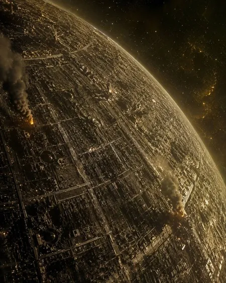
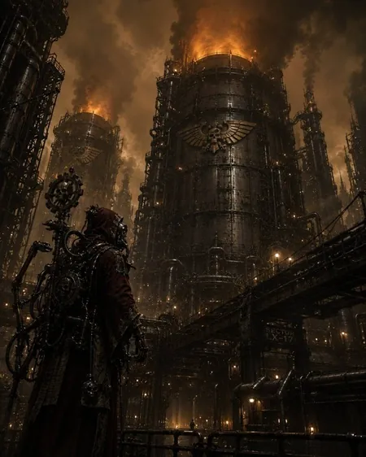
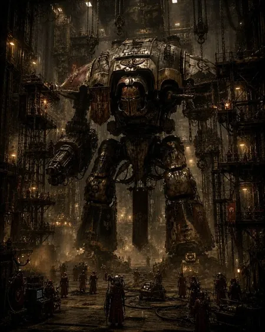
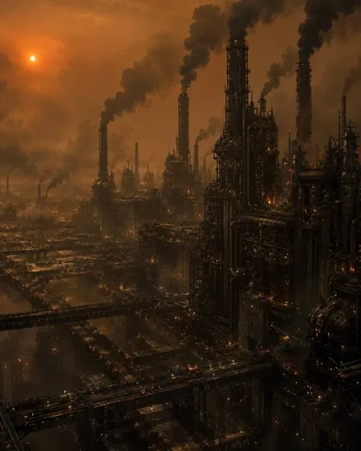
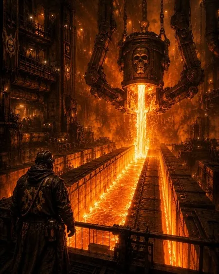
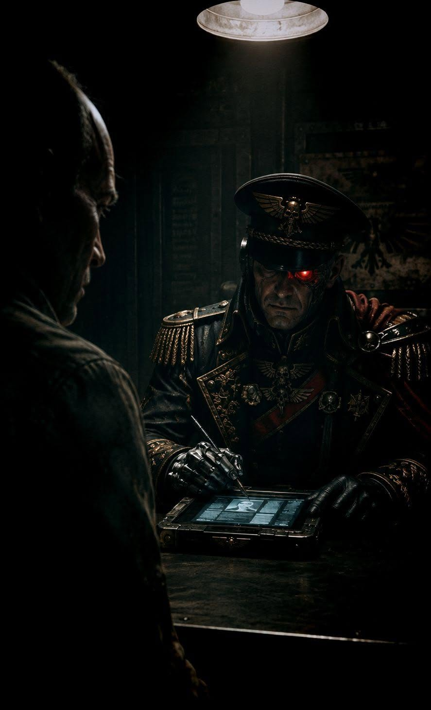
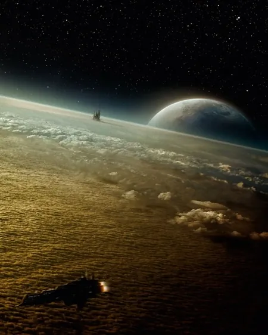

Le monde-forge n'a pas été conquis. Il s'est retourné. Ses fonderies
tournent toujours, ses litanies sont toujours chantées — simplement,
ce ne sont plus les mêmes mots, et ce ne sont plus des hommes qui
les chantent.
5 missions · chacun pour soi
I
Le théâtre d'opérations
Yarath-Maximal est un monde-forge des Étoiles Pâles, posé sur le
corridor qui relie Nocturne aux marches de Baal. Rien de
prestigieux : des fonderies de blindage lourd, des chantiers de
coque, et une chose que personne n'avait jugée importante avant la
Trahison — un vault de logique contenant les archives
pré-Unification de tout le secteur.
La forge n'est pas tombée sous les bombes. Elle s'est retournée
d'elle-même. Le Magos Dominus Kaustos-77 a rompu
ses serments à Mars, réécrit les esprits-machines de ses
fonderies, et ouvert ses portes à une Fraternité de la XVe
Légion venue chercher dans le vault ce que les Thousand Sons
cherchent toujours : ce qui a été effacé. Il l'a fait par calcul,
pas par amitié — et il commence à le regretter.
Quatre forces convergent, et aucune ne marche avec une autre.
Depuis Nocturne, une compagnie de
Salamanders avec un ordre simple : la forge ne
doit plus jamais produire. Depuis Baal, une compagnie de
Blood Angels avec un ordre différent : ce qui
dort dans le vault doit rentrer intact, et nul autre ne doit
l'avoir lu. Dans la forge, Kaustos-77 défend le corps qu'il s'est
fabriqué. Et sous le vault, la Neuvième Fraternité lit déjà.







L'officier du Mechanicum est vêtu d'une armure brillante et tient
un sceptre orné de symboles technologiques.
Nocturne
Base de départ des Salamanders. Deux sauts jusqu'aux Étoiles
Pâles.
Baal
Monde d'origine des Blood Angels. Le plus long transit des
quatre — ils arrivent en dernier, et le savent.
Yarath-Maximal
Objectif commun aux quatre. Sur la marge des Étoiles Pâles, au
bord de la zone tenue par le Dark Mechanicum.
Le Maelstrom
Voisin immédiat : tempête warp permanente. Explique la
sorcellerie stable de la XVe et l'isolement du
système.
La surface
Plaines de scorie et rampes de coulée, sous un ciel de fumée.
Chars, marcheurs et artillerie autorisés.
Les entrailles
Galeries de coulée, sas de pression, cloîtres de cogitateurs. Ni
aéronef, ni tir sans ligne de vue. Pack « Zone Mortalis ».
Les chantiers
Nefs de montage de Titans, ponts roulants, berceaux de coque.
C'est là qu'attend le Warhound — et c'est ce qui fait basculer la
campagne.
II
Les quatre belligérants
Quatre joueurs, quatre agendas. Chacun marque ses propres points de
campagne et poursuit son propre serment ; les alliances se nouent à la
table, pour un tour ou pour une partie, et se rompent de même.
Raphaël — « Le Serment de Cendre »
Salamanders — XVIIIe
Venus de Nocturne pour éteindre la forge. Terminators,
lance-flammes lourds, dreadnoughts. Détachement de Croisade en
surface, Zone Mortalis Bulwark en intérieur.
Doctrine : entrer lentement, ne rien laisser derrière soi — y
compris ce que les trois autres étaient venus chercher.
Serment : La forge ne produira plus.
Victoire personnelle : Yarath-Maximal ne produit plus rien à la
fin de la mission V.
Jean — « Le Serment de Baal »
Blood Angels — IXe
Venus de Baal pour le vault — pas pour le lire, pour l'emporter.
Raldoron a un ordre de mission simple : ce qui dort à Yarath
doit rentrer à Baal. Il pourra s'appuyer sur des unités de choc,
des dreadnoughts et des escouades de terminators, mais il sait
que la lecture a déjà commencé.
Serment :
Ce qui dort à Yarath rentrera à Baal — ou ne sera lu par
personne.
Victoire personnelle : les archives quittent le système sans que
la Neuvième Fraternité les ait lues.
Le Magos Dominus Kaustos-77 et
sa taghmata corrompue. Maître du terrain : portes, cogitateurs,
protocoles, esprits-machines réécrits. C'est lui qui décide de
l'obscurité et des sas verrouillés. Il a invité la Fraternité ;
il n'a jamais promis de la laisser repartir.
Serment :
La forge est mon corps. On n'entre pas dans un corps sans
conséquence.
Victoire personnelle : les fonderies tournent encore, et il a
survécu à ses invités.
Tristan — « La Neuvième Fraternité »
Thousand Sons — XVe
Venue lire le vault avant que quiconque ne le brûle ou ne
l'emporte. Sorciers, automates Sekhmet, tirs précis.
Zone Mortalis Strike Force : peu d'unités,
chacune capable de tenir une salle seule. Le seul des quatre qui
n'a rien à ramener — il lui suffit d'avoir lu.
Serment : Ce qui a été effacé sera relu.
Victoire personnelle : la lecture est achevée, même si tout le
reste est perdu.
Traits de faction — à appliquer sur toute la campagne
Vœu prométhéen
Salamanders — une fois par
partie, une unité relance tous ses jets de blessure ratés avec
des armes à gabarit de flamme.
Colère de Baal
Blood Angels — une unité par
partie relance son jet de charge ; si elle charge à travers une
porte ouverte ou depuis une hauteur, elle gagne +1 pour blesser
jusqu'à la fin du tour.
Protocoles Kaustos
Dark Mechanicum — une fois par
tour, actionner une porte à distance sans test, n'importe où sur
la table. En surface, deux servo-tourelles gratuites en défense.
Neuvième Fraternité
Thousand Sons — la proximité du
Maelstrom autorise une manifestation psychique supplémentaire
par tour ; en cas de ratage, l'obscurité s'épaissit.
Pactes, ruptures et trahisons — optionnel
Rien de ce qui suit n'est obligatoire : une campagne entière peut se
jouer sans qu'un seul pacte soit noué. Mais quatre agendas
incompatibles finissent rarement par quatre lignes droites.
Nouer
À tout moment, deux joueurs annoncent un pacte, avec sa durée
(un tour, ou jusqu'à la fin de la partie) et son prix : un
objectif cédé, un point de campagne promis, etc... (à définir).
Tenir
Tant qu'il tient : les deux joueurs ne se ciblent pas, leurs
unités se traversent comme des unités amies lors des mouvements
de repli, et ils ne se contestent pas un objectif — chacun le
marque normalement. Un pacte annoncé pour toute la partie et
jamais rompu vaut
+1 point de campagne à
chacun des deux.
Rompre & trahir
Rompre est gratuit : on le
déclare au début de n'importe quelle phase, et on agit
normalement ensuite. Trahir —
rompre pendant sa propre phase pour frapper immédiatement son
allié — donne +1 pour toucher sur cette attaque, mais coûte
1 point de campagne au traître
et en donne 1 au trahi.
III
Le Warhound Syrgalah
Dans les chantiers de Yarath-Maximal veille
Syrgalah, prédateur d'acier de la
Legio Audax — les Loups de Braise. Forgée dans
les fonderies de Sarum et aguerrie dans la boucherie de Bodt aux
côtés des World Eaters, la machine arpente son berceau comme une
ombre de mort incarnée : Canon Inferno prêt à vomir ses torrents
de flamme, Mega-Bolter Vulcan armé pour déchirer chair et acier.
Elle n'est pas tombée avec la forge — elle est venue la garder, au
nom du pacte que Kaustos-77 a scellé avec la Legio Audax le jour
où le monde-forge s'est retourné.
Syrgalah ne répond qu'à Thomas au début de la campagne.
Mais un Warhound reste un enjeu, pas une certitude : elle est la
cible de la mission III et l'atout de la mission V. Un seul joueur
le contrôle, et seulement à partir du moment où il l'a gagnée sur
la table — pacte renouvelé ou commandes arrachées.
Mission III — le rite inachevé.
Le Warhound est posé sur la table, immobile : Solotine refuse
de l'engager tant que Kaustos-77 n'a pas fini d'y verser les
dernières litanies de consécration. Il ne bouge pas, ne tire
pas, et compte comme une fortification (blindage 13, 6 points
de coque, terrain infranchissable). Le joueur qui contrôle son
berceau à la fin de la partie la remporte.
Mission V — la marche. Le
joueur propriétaire le déploie lors de l'avant dernier tour de
la bataille.
S'il est détruit en mission V, la carcasse
compte comme un objectif de valeur 3 pour le joueur qui a
porté le coup fatal, jusqu'à la fin de la partie : sa
dépouille valait déjà plus que sa marche.
IV
L'arbre de campagne
Cinq missions, une bascule après la troisième. Chaque résultat change
la mission suivante : son format, qui l'ouvre, et qui possède
Syrgalah.
I
Cendres sur Yarath 4 joueurs
Planétaire · 750 pts/joueur
Thomas défend, les trois autres débarquent — chacun pour soi. Le
vainqueur emporte un
avantage d'accès pour la mission
II.
II
Les galeries de coulée
Jean vs Thomas
Zone Mortalis · 1 250 pts/joueur
Course souterraine vers les chantiers. Le vainqueur du duel fixe
la
carte de déploiement de la
mission III.
III
Les chantiers de Syrgalah
bascule4 joueurs
Planétaire · 750 pts/joueur
Syrgalah change de main. Le vainqueur le contrôle en mission V ;
tout joueur encore sans victoire gagne l'atout
Dernier Recours.
Branche A — le vault est encore l'enjeu
IV·A — Le Vault de Logique
Raphaël vs Tristan
Zone Mortalis, 1 500 pts/joueur,
Ténèbres Abyssales. Raphaël doit atteindre le vault
avant que Tristan ne l'ait lu jusqu'au bout. Choisie par celui
des deux qui est le moins bien classé.
Branche B — le vault est déjà perdu
IV·B — Protocole de Cendres
Raphaël vs Tristan
Zone Mortalis, 1 500 pts/joueur,
rôles inversés : Raphaël renonce au vault et saborde la forge
avant de se retirer. Même règle de choix.
V
Le Verdict de Yarath 4 joueurs
Grande bataille · 750 pts/joueur
Résolution, à quatre. Le joueur en tête au cumul choisit la
carte de déploiement ; le dernier choisit la mission.
V
Les dossiers de mission
Mission I · Bataille planétaire · Thomas défend, trois
assaillants
Cendres sur Yarath
750 pts/joueur — quatre joueurs 5 tours
Les Thunderhawks salamanders descendent en formation serrée,
phares allumés dans la fumée de scorie. Au-dessus d'eux, les
escouades de Baal se laissent tomber en chute libre et allument
leurs réacteurs à deux cents mètres du sol. Personne n'a
coordonné les deux descentes. Les servo-tourelles de Kaustos
ouvrent le feu sur tout ce qui bouge, et la Fraternité, déjà à
terre, regarde.
Objectif principal
Trois marqueurs sur l'axe médian : le
puits d'accès majeur (valeur 3, au centre) et
deux relais de tourelle (valeur 2). Chaque
joueur marque la valeur de chaque marqueur qu'il contrôle seul
lors de ses sous-phases de victoire.
Objectifs secondaires
Tuer le Seigneur de Guerre (3)
Premier sang (2)
Le dernier carré (3)
Reconnaissance de Baal(2) — une unité à réacteurs dorsaux
termine la partie dans le quart de table d'un autre joueur,
hors combat.
Règles spéciales
Défense automatisée — le Dark Mechanicum
déploie gratuitement deux batteries Tarantula ou plateformes
Araknae et tire avec elles avant le premier tour, en tirs au
jugé, sur l'unité la plus proche sans distinction de
propriétaire.
Descente en deux vagues — tous les
détachements de Raphaël et de Jean commencent en réserve ;
leur test réussit automatiquement aux tours 2 et 3 et ils
entrent par n'importe quel point de leur bord de table.
Aucune réaction d'Interception contre eux.
Brume de scorie — la XVe
épaissit l'air. Au tour 1, aucune arme ne peut cibler
au-delà de 24″. Au tour 2, 36″. Ensuite, plus de limite.
Cinquième tour — à la fin du tour 4, Thomas
lance un dé : sur 4+, un tour supplémentaire est joué.
Mission II · Zone Mortalis · Blood Angels
contre Dark Mechanicum
Les galeries de coulée
1 250 points par joueur 5–6 tours
Sous la plaine, la forge respire encore. Les galeries
transportent l'acier en fusion vers les moules ; un homme en
Terminator y passe à peine, et deux ne se croisent pas. Les
Blood Angels y entrent quand même, parce que le chemin le plus
court vers le vault passe par là — et parce qu'une galerie de
trois pieds de large est exactement le genre d'endroit où une
hache tranche mieux qu'un bolter.
Sélection de la mission
Utilisez le pack
« Zone Mortalis »
: accordez-vous sur une mission, ou lancez un dé.
Table de tirage des missions Zone Mortalis
1
Assaut de secteur
— poussée frontale dans les galeries
2
Sans quartier
— attrition pure, aucun objectif
3
Terre ensanglantée
— tenir le sol conquis
4
Prise de contrôle
— terminaux et sas
5
Nexus de ruine
— carrefour central disputé
6
Domination totale
— domination de secteur généralisée
Aucun jet effectué.
Objectif principal — Sang pour sang
1 point de victoire chaque fois que la dernière figurine d'une
unité ennemie est retirée hors sous-phase de défi. Si l'attaque
venait d'une unité dont la majorité des figurines a
Avant-Garde (X), marquez X points à la place.
Objectifs secondaires
Domination de Secteur (1) — le joueur
réactif marque, pendant chaque sous-phase de victoire
adverse, pour chaque secteur où il compte plus d'unités que
l'ennemi. Les unités sous statut tactique ne comptent pas ;
Ligne (X) compte X unités de plus.
Tueur de Champions (1) — à chaque défi
gagné dont le combat est également gagné, +1 point ; +1
supplémentaire si la figurine retirée est de type Parangon.
Saignée des valves(3) —
propre à la campagne. Trois valves de coulée sont
placées, une par secteur central. Jean marque 3 points par
valve dont il a pris le secteur au corps à corps ; Thomas
marque 2 points par valve encore sous son contrôle en fin de
partie.
Mission III · Bataille planétaire · Bascule narrative
Les chantiers de Syrgalah
750 pts/joueur — quatre joueurs
La nef de montage fait huit cents mètres de long et trois cents
de haut. Au centre, dans son berceau, Syrgalah — immobile,
réacteur en veille rituelle. Personne ne tire dans sa direction
: les quatre veulent la machine entière. On se bat donc autour
d'elle, sous elle, entre ses jambes, à portée de crachat.
Objectif principal — le berceau
Syrgalah occupe le centre exact. Son
berceau est une zone de 12″ autour de sa base :
le joueur qui y compte le plus d'unités non entravées à la fin
de la partie marque 6 points de victoire et
remporte la machine. Quatre
ponts roulants (valeur 2) sont placés aux
quatre coins de la nef ; ils se marquent normalement chaque
sous-phase de victoire.
Objectifs secondaires
Rite inachevé(3) —
trois tests d'Intelligence réussis, cumulés sur la partie, par
une figurine au contact du Warhound et hors combat : achevez
la consécration si vous comptez emmener la machine, sabotez-la
si vous préférez que personne ne l'ait.
Tuer le Seigneur de Guerre (3) ·
Géant tueur (2) · Le dernier carré
(2)
Règles spéciales
Feu contraint — aucune arme de gabarit
d'explosion ni de Barrage (X) ne peut cibler une unité
située dans le berceau. Personne ne veut abîmer la machine.
Ponts roulants — au début de chaque tour de
bataille, le joueur actif peut déplacer un pont roulant de
6″ le long de son rail. Toute unité dessous doit réussir un
test d'Initiative ou subir une touche de force 6, PA 4,
dégâts 1.
Le vault chante — Tristan peut, une fois
par partie, relancer une manifestation psychique ratée : les
archives lui soufflent la formule juste.
Dernier Recours — tout
joueur encore sans la moindre victoire de campagne gagne,
une fois par partie : relancer un jet de réserve raté, faire
entrer une unité par n'importe quel bord de table, et
relancer tous les tests de Moral d'un même tour.
Mission IV·A · Zone Mortalis ·
1 500 pts · Raphaël vs Tristan
Le Vault de Logique
La forge a coupé ses propres lumières, et la Fraternité a fait
le reste : dans le cloître du vault, l'obscurité n'est plus une
absence de lumière, c'est une présence. Les Salamanders avancent
au lance-flammes, parce que le feu, au moins, éclaire.
Objectif principal
Le terminal Kaustos-Alpha, au centre exact.
Le joueur qui le contrôle en fin de partie marque 6 points.
Chaque tour où il est contesté, personne ne marque.
Secondaires
Lecture achevée (3) — Tristan cumule quatre
tests psychiques ou d'Intelligence réussis au contact du
terminal. S'il y parvient, il marque même en perdant le
contrôle.
Purge prométhéenne (2) — Raphaël détruit
deux unités ennemies à 6″ ou moins du terminal.
Tueur de Champions (1) ·
Domination de Secteur (1)
Ténèbres Abyssales
Aucune ligne de vue au-delà de 12″. Les armes à gabarit de
flamme et les unités dotées de
Vision Nocturne ignorent cette limite. Chaque
manifestation psychique ratée de la XVe
réduit la limite de 2″ pour tout le monde jusqu'à la fin du
tour suivant, minimum 6″ — y compris pour elle.
Épilogue possible
Vault tenu par Raphaël → il le sabordera : en mission V, la
table se joue en défense étagée et c'est lui qui la pose.
Vault lu par Tristan → il connaît les plans des trois autres :
en mission V, c'est lui qui choisit la carte de déploiement,
quel que soit le classement.
Mission IV·B · Zone Mortalis ·
1 500 pts · Raphaël vs Tristan
Protocole de Cendres
Le vault est perdu. Reste à décider de ce qu'il en restera. Les
rôles s'inversent : ce sont les Salamanders qui posent les
charges, et la Fraternité qui doit tenir les couloirs assez
longtemps pour finir sa lecture.
Objectif principal
Quatre nœuds de conduite, un par quadrant.
Raphaël marque 3 points par nœud détruit aux charges de sape ;
Tristan marque 3 points par nœud intact en fin de partie.
Secondaires
Sortir vivant (3) — une unité de Raphaël
quitte la table par son bord de déploiement après la
destruction d'au moins deux nœuds.
Aucun témoin (2) — aucune unité de Raphaël
ne quitte la table.
Sang pour sang (1)
Charges de sape
Toute figurine Legiones Astartes de
sous-type Commandement ou Sergent portant un bouclier
d'abordage peut recevoir des charges de sape (+10 pts).
Déclarées à l'étape 2 de la sous-phase de combat contre une
fortification : initiative 0, touches automatiques, force 10,
PA –, dégâts D3+3.
Épilogue possible
Trois nœuds ou plus détruits → la mission V se joue sur une
table en ruines : terrain difficile généralisé, aucun renfort
de la forge pour personne. Sinon, la forge intacte donne à
Thomas un détachement
Apex gratuit en mission V.
Mission V · Grande bataille · Résolution
Le Verdict de Yarath
750 pts/joueur — quatre joueurs — Warhound inclus
Tout ce qui tient encore debout entre dans la bataille, et
Syrgalah marche enfin — pour l'un des quatre. Les quatre joueurs
déploient l'intégralité de leur budget de campagne, moins les
unités mortes pour de bon. Les pactes de la veille ne valent que
ce que vaut la parole de chacun.
Mise en place asymétrique
Le joueur en tête au cumul de points de campagne
choisit la carte de déploiement ; le dernier au
classement choisit la mission parmi trois. Un
joueur relégué à 6 points ou plus du meneur peut à la place
réclamer sa mission de la dernière chance.
Ligne d'avance — quatre objectifs de valeur
1 poussés secteur par secteur vers le bord adverse : marquer
maintenant ou progresser encore, il faut choisir à chaque
tour.
Percée — mêmes objectifs, mais les réserves
du défenseur entrent par les bords courts et menacent les
flancs.
Raid de l'aube — déploiement en diagonale,
le défenseur déploie toujours en premier, l'attaquant prend
le premier tour sur 4+, et tous les tirs du tour 1 sont des
tirs au jugé.
Dernière chance — « La Sentence »
— le joueur qui la réclame devient attaquant unique et les
trois autres défendent, sans être alliés pour autant. Il
gagne la campagne s'il détruit le Seigneur de Guerre du
meneur
et contrôle le centre à la fin du tour 5 ; sinon
elle est perdue pour lui, quels que soient ses points.
VI
Progression & conséquences
Points de campagne
3 points — victoire majeure (écart de 15 points
de victoire ou plus).
2 points — victoire mineure.
1 point — égalité, pour chaque joueur concerné.
+1 point — compte-rendu de bataille rédigé
avant la session suivante. La chronique fait partie du jeu.
+2 points — possession de
Syrgalah, comptés une seule fois après la mission III.
−1 point — dépassement du
plafond de points, même de peu. La contrainte fait partie du
jeu.
±1 point — pacte tenu jusqu'au
bout, ou trahison consommée : le traître perd un point, le trahi
en gagne un (section II).
Cicatrices de campagne
Après chaque mission, chaque joueur choisit une unité détruite et
lance un D6 :
1-2 — décimée : indisponible
pour la mission suivante.
3–4 — reconstituée : aucun
effet.
5–6 — endurcie : une fois par
partie, gagne une relance de test de Commandement ou de Sang
Froid.
Serments de campagne
Les quatre serments sont déjà écrits (section II). Tenir le sien
en mission V vaut 2 points de campagne, quel que
soit le résultat de la bataille — et un serment tenu par un joueur
battu est le meilleur récit de fin possible.
Chacun peut reformuler le sien avant la mission I.
VII
Journal de guerre
Journal de guerre — victoires et points de campagne par joueur
Joueur
Force
Victoires
Points
Ajuster
Salamanders — XVIIIe
0
0
Blood Angels — IXe
0
0
Dark Mechanicum — Kaustos-77
0
0
Thousand Sons — XVe
0
0
Aucun meneurAucun dernierCampagne à l'équilibre — personne ne mène
Le compte-rendu, mode d'emploi
Trois à cinq lignes après chaque partie, pas plus : le résultat, un
moment marquant, et la conséquence narrative retenue. C'est ce
texte, et non le score, qui alimente la mission suivante.
Postez-le dans le canal du groupe avant la session suivante. Mis
bout à bout, les cinq comptes-rendus forment la chronique du Reflux
— c'est le vrai trophée.